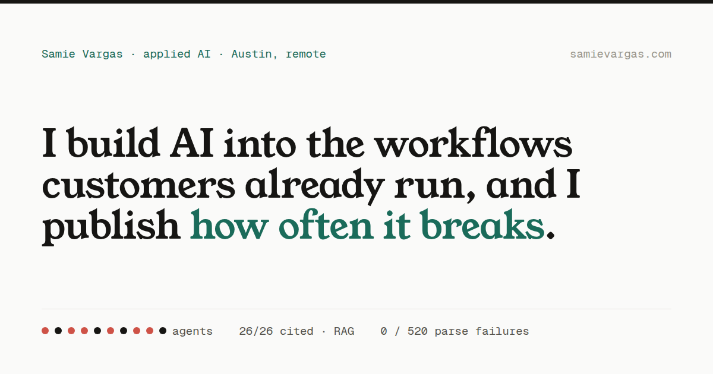

I always wanted my own website, and I wanted to teach myself to code past HTML. This page is the part I would normally keep in a scratch file: the tokens, the components, the marks, the copy decisions, and every change I have made with the reason attached.
It is public because I found evebouffard.com and loved being able to see the thinking that went into a site alongside the site. So here is mine.
The list on the left is pulled live from the commits on samievargas.github.io, so it updates itself when I push. The notes on the right are the ones worth a sentence of explanation, because a commit message never says why.
Empty. Everything I know about is shipped — I am pushing the rest right now.
Everything here is in css/styles.css and rendered live, so this page breaks if I break the styles. Two typefaces, one green, no framework: Newsreader for anything that speaks, IBM Plex Mono for anything that labels, Helvetica for the reading.
Buttons
.btn--solid · --accent · --ghost
Segmented control
.seg — plain / technical
PlainTechnicalFilter chips
.chip · .chip.is-on
Tech tags
.tag — never clickable
Carousel controls
.arrow · .dot · .dot.is-on
Labels
.label — never body copy
Verify pill
.cert__verify — credentials only
Verify ↗Status dot
.status — pulses, 2.4s
Exploring rolesOne correction I made to my own system: the faint grey was #9a9686, which measures 2.6:1 on paper and fails contrast. Anything carrying meaning now uses #77735f at 4.6:1, and the old value is decorative only.
Most people meet this site as a favicon in a crowded tab strip or a card in someone's Slack. Both were the least considered part of it, so I redrew them in the same type as everything else.
An italic S in Newsreader on the site green, with a hairline inset so it reads as a plate instead of a blob. I checked it at 16px first and drew back up from there.
64px
32px
16px · tab
In the set
favicon.svg · favicon-32.png
favicon-16.png · apple-touch-icon 180
icon-192 · icon-512, both maskable
The card used to be 347×190 and said only my name, so it arrived blurry and told you nothing. Now it carries the claim, the domain, and three numbers I can defend.

The same card, everywhere it shows up
Slack
samievargas.com
I ship AI tools that replace work I used to do by hand
Signal reads messy account files in a minute. 3.4M orders modeled in dbt.
iMessage
Six strings that most people never see me choose, and the reasoning behind each. These are what is live now.
Plain HTML, CSS custom properties, and vanilla JavaScript modules, deployed on GitHub Pages. No framework and no build step, which was the point: I wanted to understand every part of it rather than inherit someone else's structure.
The two agents on the site — Signal and Brain Dump — talk to the Anthropic API through a Cloudflare Worker, so the key stays on the server and the front end can stay public. Same pattern both times.
I built it with Claude Opus, and I am saying so here because the alternative is pretending I did not. What I brought was the judgement: what to cut, what to prove, and which numbers I am willing to defend.
HTML · CSS custom properties · vanilla JS modules
Anthropic API behind a Cloudflare Worker
dbt on BigQuery · Python · folium
GitHub Pages · custom domain · GA4
Claude Opus, and my own judgement about what to cut